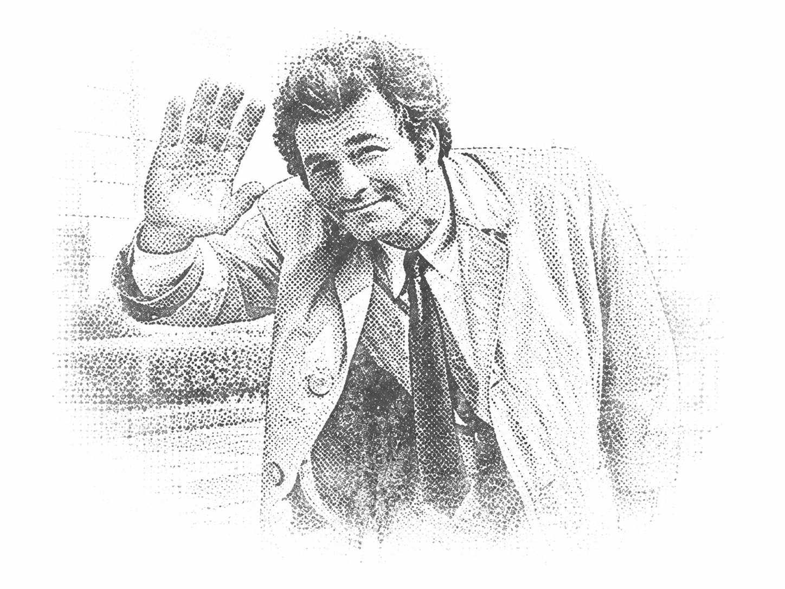

Collect the facts
What can change from one situation to the next? Name every state, category and boundary.
Programming puzzles investigated one clue, one question and one decision chain at a time.
Before Python can describe a solution, somebody has to understand the case. That somebody is you.
Open the case files
Oh—just one more thing...Many beginner exercises look like punctuation problems: where does the colon go, how far should this line be indented, and which else belongs to which if? Usually, the real difficulty appeared earlier. The rules have not yet been separated, ranked and arranged into understandable units.
The goal is not to “think in Python” immediately. The goal is to investigate clearly enough that Python has something orderly to describe.
The Columbo Codes principle
Every case begins in ordinary language. The method turns that story into a mental map before it introduces Python-shaped structure.
What can change from one situation to the next? Name every state, category and boundary.
Does a fact override ordinary rules, select an ordinary result, or modify an eligible result afterwards?
Which rule controls the widest part of the remaining decision world? Stronger rules must be asked first.
An if / elif / else chain works from top to bottom. The first true branch wins that chain.
Different routes can establish one shared value, rejoin, and hand that result to the next operation.
Indentation records ownership: which instructions belong to which question and which world they operate inside.
Each case uses a different everyday problem to expose one part of the larger reasoning method. Read them in order or open the question that matches your current difficulty.
A parcel-delivery investigation that separates a large price-finding process from a smaller discount calculation.
A pricing puzzle in which a child-bike override, holiday priority, rain pricing and an eligible discount must be placed in the correct order.
if statements as new unitsEvery new exercise brings different facts. The investigation stays the same: discover what can change, determine which rules have the widest effect, and make the structure visible before asking Python to run it.
Practice does not merely make perfect. It makes the clues easier to recognise.